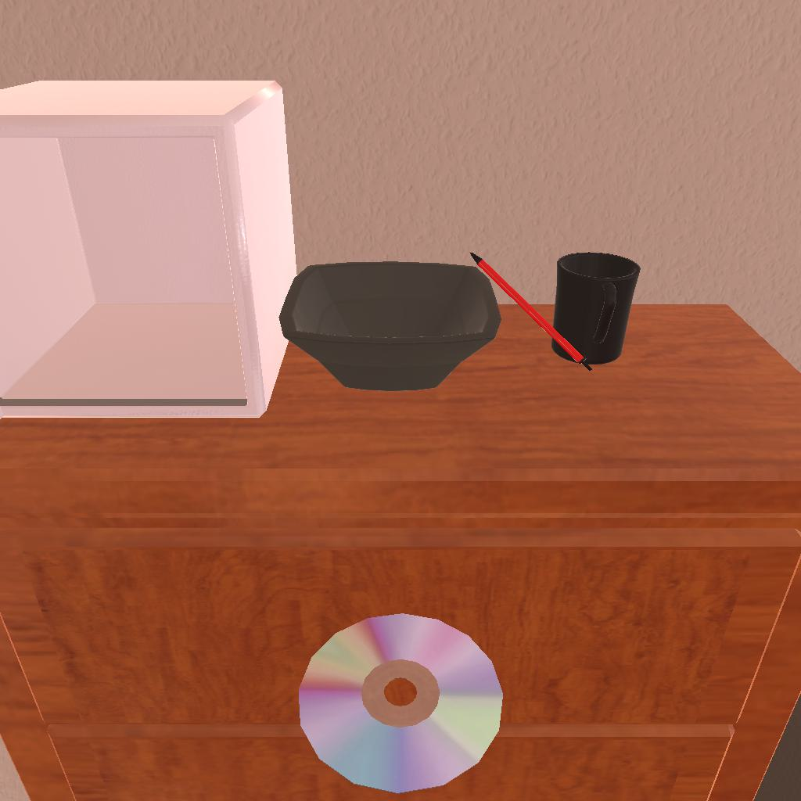

---------------------------------------------------------task: 6---------------------------------------------------------
--------------------------------------------------------------------------------------------------------------------------------------------------------------------
--------------------------------------------------------------------------------------------------------------------------------------------------------------------
Step:--------------------------------------------------------------------------15-------------------------------------------------------------------------------
----------------------------------------
VLM Prompt:
Image1:
Image2:
**Instruction**
1. Analyze the provided images to identify all visible household objects and compare the difference between images (e.h. whether the object is opened or not and taken on hand or not), focusing on those relevant to the task description "put some cd on safe."
2. Use the analysis of images and the task hint "The agent must find an object of the desired type, pick it up, find the correct location to place it, and put it down there." to answer the question: what is the most reasonable action in the choices for the task description "put some cd on safe"?
3. Decide and write the answer using the template: The answer is: (i): , where i is the real number. If there is no desired object in images, search every place based on **Initial Observation** to find the object. And if no one is exactly correct, choose a similar answer.
**Initial Observation**
You are in the middle of a room. Looking quickly around you, you can see bed (1-2), dresser (1), sidetable (1-2), drawer (1-11), desk (1), garbagecan (1), safe (1)
**Answer Choices**
(1): go to bed 1
(2): go to dresser 1
(3): go to bed 2
(4): go to sidetable 1
(5): go to drawer 1
(6): go to drawer 2
(7): go to sidetable 2
(8): go to drawer 3
(9): go to drawer 4
(10): go to desk 1
(11): go to garbagecan 1
(12): go to drawer 5
(13): go to drawer 6
(14): go to drawer 7
(15): go to drawer 8
(16): go to drawer 9
(17): go to drawer 10
(18): go to drawer 11
(19): close safe 1
(20): examine cd 1
(21): examine safe 1
**Answer**
Let's think step by step by following the instructions.
----------------------------------------
----------------------------------------
Original Response:
Image Analysis:
- In both images, we can see a safe, a black bowl, a red pen, a black cup, and a CD lying on the dresser.
- The difference between the images is that the safe is closed in Image 1 and opened in Image 2. There is no visible change in the position or state of the CD or any other items.
Task Description Analysis:
- The task is to "put some cd on safe."
- Based on the provided task hint, the agent needs to find a CD, pick it up, locate the safe, and place the CD on it.
Action Decision:
- Since the CD is already visible on the dresser in both images and the safe is also present there, the agent does not need to go anywhere to search for these objects.
- The agent should focus on taking the action that relates to either examining or handling the CD or the safe.
From the Answer Choices:
- (19): close safe 1 is not relevant as the task is to put the CD on the safe, and closing it would contradict the task.
- (20): examine cd 1 is an appropriate action to ensure the agent has identified the correct object to interact with.
- (21): examine safe 1 could be a preliminary action before placing the CD on the safe, but it is less specific to the task than examining the CD.
The answer is: (20): examine cd 1
----------------------------------------
----------------------------------------
>>> Refine Original VLM Response and Get Pure Action: examine cd 1
----------------------------------------
-----------------------------------------------------------------
Running time: 13.584961175918579 seconds
Total Money: 2.5102100000000007
-----------------------------------------------------------------
-----------------------------------------------------------------
Text Observation:This is a normal cd 1
-----------------------------------------------------------------
UNSUCCEED